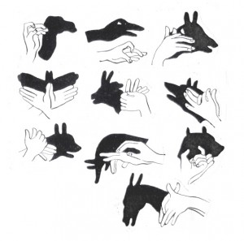
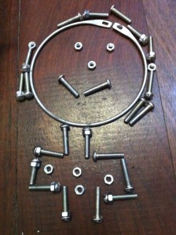

 |

Mit dem Schatten der Hände zu spielen: ist Zauberei!
PDF

 |
Mit dem Schatten der Hände zu spielen: ist Zauberei!
PDF

Hüpfend durch die Stadt Wir springen auf die Gullydeckel und rufen "Kreis", "Rechteck" oder "Quadrat". Für Noah ist das ein guter Weg die geometrischen Formen zu…
Weiterlesen →
Formen: Verschiedene Formen ergeben unterschiedliche Silouhetten, wie Tiere, Häuser... Erst stellt man die unterschiedliche Stempel (Beispiel Posts: „estampar“, „patatas de otra manera“) her und dann geht…
Weiterlesen →

Eine Wolke aus Draht. Die Wimpel sind aus Washi Tape, über einen Faden gefaltet und dann schneidet man die Form.
Weiterlesen →
Peddigrohr für Korbflechterei. Man lässt es in Wasser einweichen und kann es dann fast beliebig formen. Nachdem das Rohr getrocknet ist, haben wir ein Band in…
Weiterlesen →
Ich liebe Tangrams. Und bevor ich euch unsere Tangrams zeige, habe ich meine lieblings Formen zusammengestellt. Kleinere Kinder können einfach die Lösung nachlegen.
Weiterlesen →